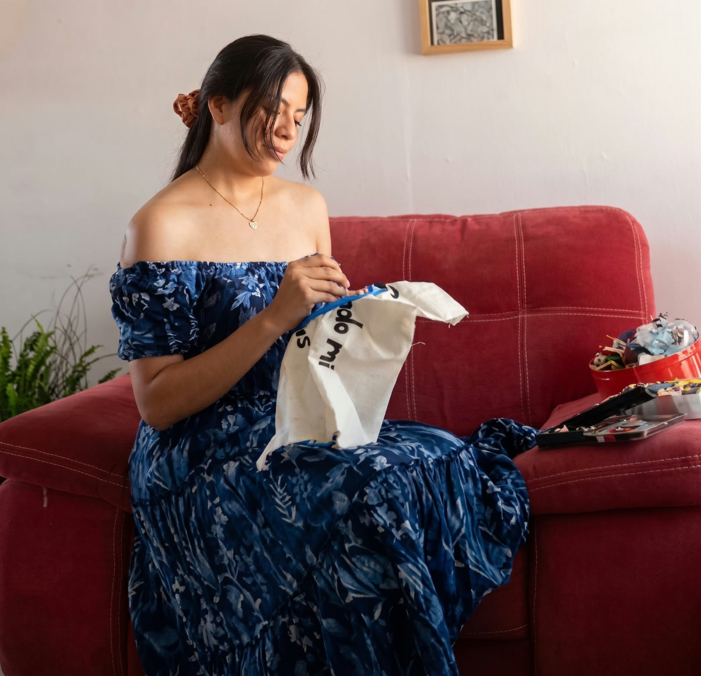
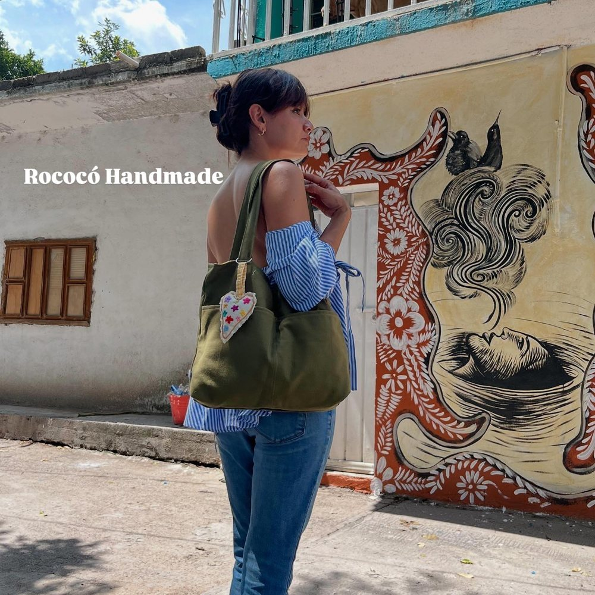
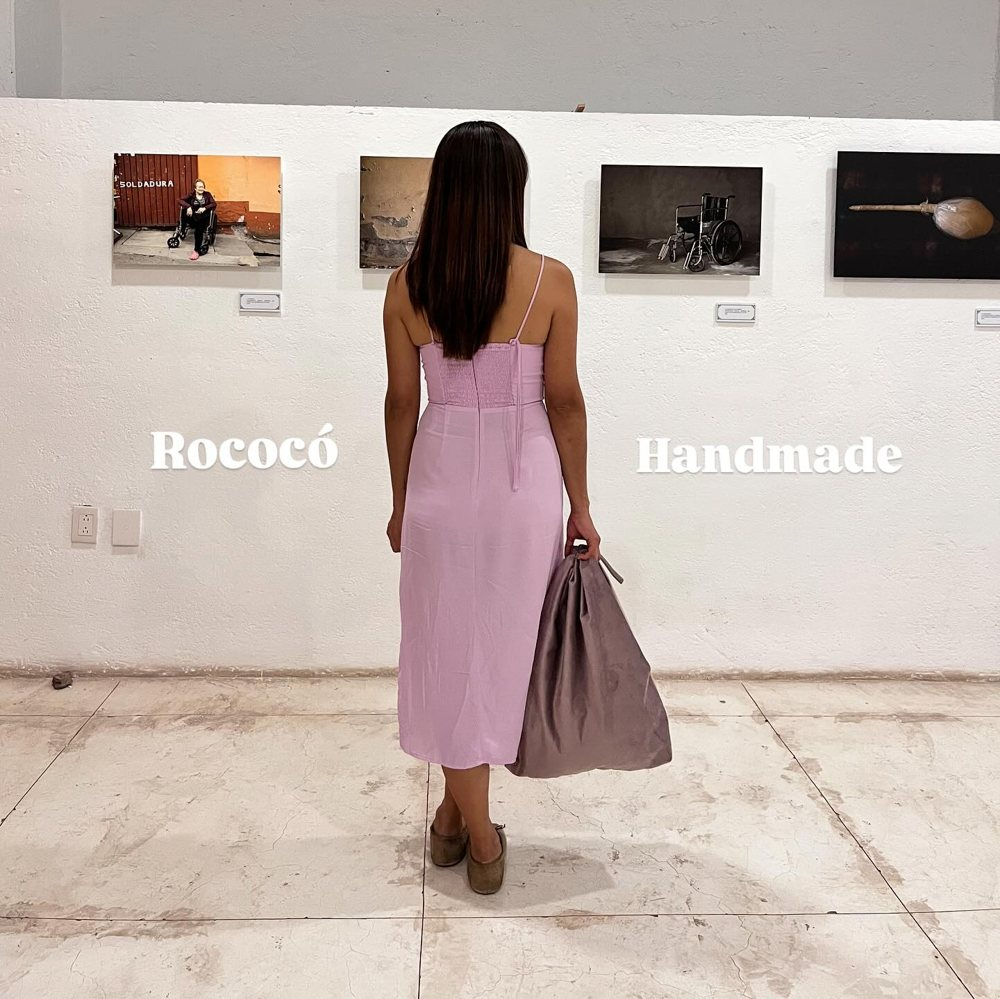
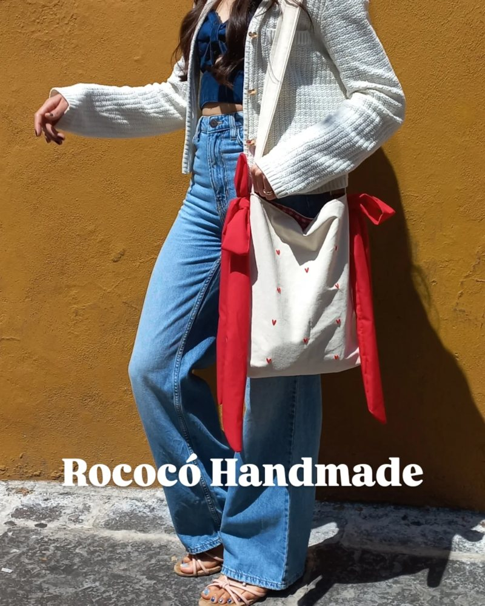
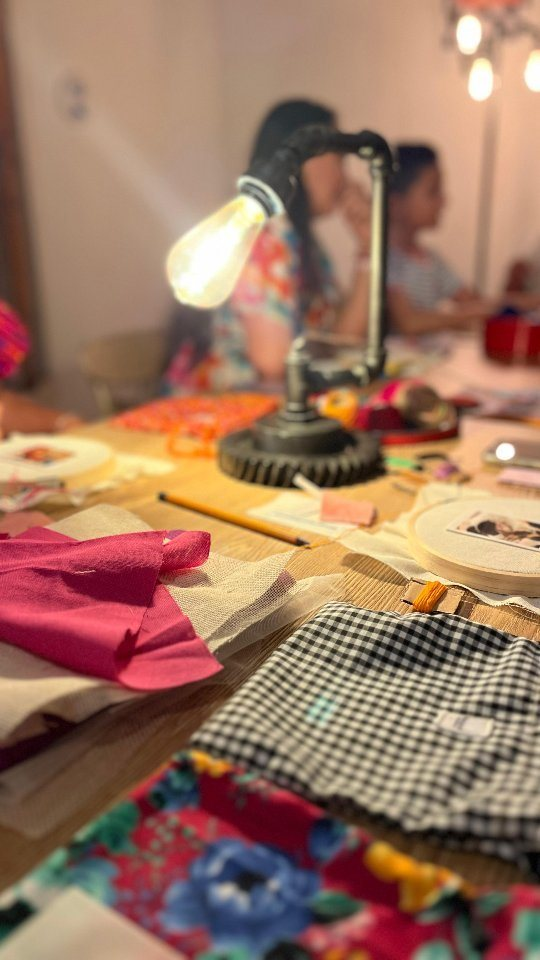

Desliza para explorarHuajuapan de León, Oaxaca · Desde 2020
Bolsas y accesorios bordados puntada a puntada
Piezas únicas, bordadas con magia. Las hacemos a mano con hilos, telas y creatividad, y no hay dos iguales.
¿Qué ofrecemos?
Tote bags de tela
Con bordados de corazones, flores, abejas, ojos y más.
Bolsas y mochilas
Tipo morral, en mezclilla reutilizada, con aplicaciones bordadas.
Cangureras
Riñoneras de mezclilla con detalles bordados.
Piezas personalizadas
Cotizamos tu diseño y damos talleres de bordado.
Catálogo
Piezas disponibles
Toca una foto para verla en grande. Para pedir, escríbenos por WhatsApp desde el botón de cada pieza.
Cargando piezas...
Así se usan
Creo magia en todo lo que hago
Nuestras piezas acompañan tu día a día: a la escuela, al trabajo, a una exposición o a pasear por la ciudad.






Cotizador de piezas personalizadas
Diseña tu pieza y mira cómo queda
Elige la pieza, sube la foto del bordado que te gusta y escoge tamaño, letra y colores. Al terminar te abrimos WhatsApp con tu solicitud lista para enviar.
Pedidos
Cómo pedir tu pieza
Elige
Escoge una pieza del catálogo o cuéntanos tu idea para una personalizada.
Escríbenos
Mándanos mensaje por WhatsApp o Instagram. Te confirmamos disponibilidad y precio final.
Aparta
Realiza tu pago y te compartimos el tiempo de elaboración de tu pieza.
Recibe
Entregamos en Huajuapan o enviamos por paquetería a cualquier parte de México, con número de guía.
Envíos
Entrega local en Huajuapan de León y envíos nacionales por paquetería. El costo depende del destino; te lo damos al cotizar.
Formas de pago
Transferencia, depósito o efectivo en entregas locales. Te enviamos los datos al confirmar tu pedido.
Cuidados
Lava a mano con agua fría y jabón neutro, sin tallar el bordado. Seca a la sombra y plancha por el revés.

📍 Huajuapan de León · PresencialTalleres creativos
Aprende a bordar con nosotras
Compartimos nuestra pasión por los hilos en talleres presenciales para principiantes y entusiastas. Una tarde para desconectar, crear en comunidad y llevarte tu propia pieza terminada a casa.
Desde cómo enhebrar y tensar hasta flores en relieve y texturas tradicionales.
Bastidor de madera, tela, agujas y selección de hilos que te llevas contigo.
Cupo reducido (máximo 8 personas) para acompañarte paso a paso con paciencia.
Sesiones en fin de semana. Fechas y cupos anunciados por WhatsApp y redes.
Nuestro nombre viene de la puntada rococó: un nudo de hilo enrollado que forma pequeñas flores y relieves.
Nuestra historia
Nacimos del amor por lo hecho a mano, los colores y los pequeños detalles que hacen única cada creación.
Transformamos hilos, telas y mucha imaginación en piezas llenas de personalidad. Nos encanta experimentar, dar nueva vida a los materiales, como la mezclilla reutilizada, y convertir ideas en accesorios que te acompañen en tu día a día.
“Siempre he creído que las cosas más bonitas nacen de hacer lo que amas. Rococó es un pedacito de mi imaginación, de mis sueños y de todo el cariño que pongo en cada creación.”
Nat Jiménez · FundadoraProductos 100 % originales y artesanales.
Materiales de calidad, llenos de color y personalidad.
Damos nueva vida a los materiales y cuidamos cada detalle.
Ayuda
Preguntas frecuentes
¿Todos sus productos están hechos a mano?
Sí. Cada pieza está elaborada artesanalmente, con creatividad, dedicación y atención a los pequeños detalles.
¿Hacen envíos a todo México?
Sí. Estamos en Huajuapan de León, Oaxaca, y enviamos a toda la República Mexicana por paquetería.
¿Puedo personalizar mi pedido?
Claro. Compártenos tu idea y te ayudamos a cotizar un diseño personalizado.
¿Cuánto tarda en estar listo mi pedido?
Cada creación requiere su propio tiempo de elaboración. Depende del producto y de si es personalizado; al hacer tu pedido te decimos el tiempo estimado.
¿Qué productos puedo encontrar?
Tote bags, bolsas, mochilas, cangureras y accesorios elaborados con telas y bordados. Cada pieza tiene su propio encanto.
¿También dan talleres de bordado?
Sí. Impartimos talleres presenciales en Huajuapan de León para aprender puntadas básicas y la puntada rococó con todo el material incluido. Puedes consultar la sección de Talleres o escribirnos por WhatsApp para conocer las próximas fechas y apartar tu lugar.
¿Cómo hago un pedido?
Escríbenos por WhatsApp o redes sociales, cuéntanos qué pieza te interesa y te ayudamos con tu compra.